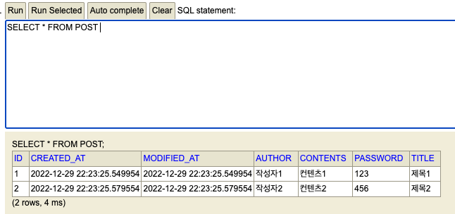

25일, 스프링 입문 주 차#, API 설계 시험, 트랜잭션, 더티 체킹
오늘은 10시~12시 주특기 입문 주 차 시험이 있었다.
회원 조회와, 회원 리스트를 RestAPI로 구현하는 과제가 나왔고 아래처럼 구현하였다.
이것과 관련해서 습관처럼 사용하던 @Transactional 어노테이션을 굳이 사용하지 않아도 되는 상황이면 사용하지 말라고 하여서 한번 정리해 보았다.
JPA에서의 트랜잭션이란?
상황에 맞게 사용하기 위해
- Transaction의 이해와
- @Transactional의 이해를 위해 정리를 조금 해보았다.
일단 저번 TIL에서 더티 체킹이란 것이 일어나서, 레파지토리를 접근하지 않고
엔티티의 변경을 이용하여 데이터 수정을 한 것이 있었는데
이 더티 체킹은 트랜잭션 안에서의 변경이 일어날 시 변경 내용을 자동으로 데이터베이스에 반영하는 JPA의 특징 중 하나라고 한다.
그렇다면 트랜잭션이란?
데이터베이스 관리 시스템에서 사용되는 용어로,
데이터를 읽고 쓰고 저장하는 일련의 모든 데이터 연산에 대한 단위라고 한다.
이 단위는 예를 들어 회원정보 수정 기능이 있다면,
회원정보를 받아 회원정보를 업데이트! 하고,
회원정보를 다시 select 해서 사용자에게 던져주는 것 까지를 하나의 트랜잭션 단위로 본다고 생각하면 이해하기가 쉬울 것이다.
이런 단위가 필요한 이유? 예를 들어 은행 송금 기능, 주식 기능 등의 경우 자산이 왔다 갔다 하는 중요 서비스이므로
아래는 예만 든 것!
- A —-송금(5억)-> B
- ……로직…………
- DB에 A 사용자의 5억 삭제
— 여기서 만약, 3이 실행되고 4가 오기 전에 에러가 난다면? — - DB에 B 사용자의 5억 추가
A 사용자의 5억은 사라지고 B 사용자는 5억을 받지 못할 것이다.
그러므로 저것들을 일련의 트랜잭션 단위로 묶고,
1부터 4까지의 단위가 성공하면 모든 과정은 진행이 된 것이고
중간에 오류가 발생한다면 실행하기 전의 Data 상태로 롤백을 시키는 것이다.
그렇다면 트랜잭션을 굳이 사용하지 않아도 되는 경우?
단순하게 생각했을 때 쿼리의 사용이 한번 일어나는 경우일까??
예를 들어 기존의 코드는 아래처럼 작성했는데
findById라는 한 번의 쿼리만 실행되고, 값을 못 가지고 온다 쳐도 NullPointerException을 띄워주고,
못 가지고 온다 해서 금전적으로 손해를 본다든지 중요한 데이터가 날아간다든지 하지 않는다.
그러므로 @Transactional을 빼줘도 동작할 것이다.
@Transactional(readOnly = true)
public MemberResponseDto findMember(Long id) {
Member member = memberRepository.findById(id).orElseThrow(
() -> new NullPointerException("회원 상세 조회 실패")
);
// Entity -> DTO
MemberResponseDto memberResponseDto = new MemberResponseDto(member);
return memberResponseDto;
}
public MemberResponseDto findMember(Long id) {
Member member = memberRepository.findById(id).orElseThrow(
() -> new NullPointerException("회원 상세 조회 실패")
);
// Entity -> DTO
MemberResponseDto memberResponseDto = new MemberResponseDto(member);
return memberResponseDto;
}
트랜잭션과 JPA 관련 부분은 이제 곧 배우니 그때 확실히 정리를 해야겠다.
트랜잭션이 지금 기준으로는, service 계층의 하나의 메소드(로직)에서 돌아가니
로직 안에서 권한 확인, 정보 수정과 같은 로직이 있다면 사용해야 하지 않을까 싶다!
저녁 6시에는 스프링 관련 세션이 있었는데.
스프링 내에서 데이터를 입력하는 방법을 알려주셔서 간단하게 정리해 보려고 한다.
어떻게 보면 객체를 만들고 넣은 것뿐인데 스프링의 구조에 아직 익숙치 않아서 시도해 보질 못했다.
SampleApplicationRunner
스프링 부트 어플리케이션 어노테이션이 붙은 Application과 같은 경로의 위치에 SampleApplicationRunner을 만들어주고 아래처럼 컴포넌트 등록한 후
run을 오버라이딩해서 repositroy를 통해 직접적으로 값을 넣어줄 수 있다.
이제 테스트할 때 아래처럼 미리 만들어놓고 하면 편할 것 같다.
실행 시마다 H2 인 메모리 방식으로, postRepository를 통해 값을 넣어준다.
// SampleApplicationRunner
@Component
@RequiredArgsConstructor
public class SampleApplicationRunner implements ApplicationRunner {
private final PostRepository postRepository;
@Override
public void run(ApplicationArguments args) throws Exception {
PostRequestDto postRequestDto = new PostRequestDto(
"제목1", "컨텐츠1", "작성자1", "123"
);
PostRequestDto postRequestDto2 = new PostRequestDto(
"제목2", "컨텐츠2", "작성자2", "456"
);
Post post1 = new Post(postRequestDto);
Post post2 = new Post(postRequestDto2);
postRepository.save(post1);
postRepository.save(post2);
}
}
